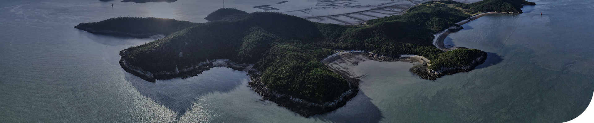
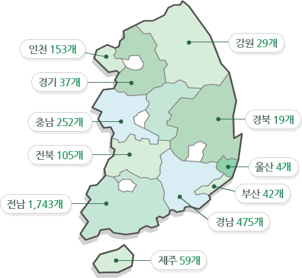
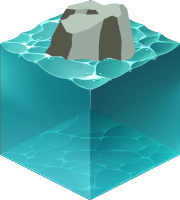

바다로 둘러싸여있고 만조시 해수면 위에 들어나는
자연적으로 형성된 땅으로서 사람이 거주하지 않는 곳
타이틀 영역
서비스 안내 영역 서비스 안내 영역 서비스 안내 영역

우리나라의 무인도서는 몇개일까?
무인도
0개
0%
출처 : 제2차 무인도서 종합관리계획(‘20~’29)

유인도
0개
0%
출처 : 제4차 도서종합개발 10개년계획(‘18~’27)
무인도서 이외의 도서로서
사람이 거주하는 도서
사람이 거주하는 도서
무인도서 현황 한눈에 보기
시도별 무인도서 현황

인천 153개, 경기 37개, 강원 29개, 충남 252개, 전북 105개, 전남 1,743개, 경북 19개, 울산 4개,
부산 42개, 경남 475개, 제주 59개
거리구간별 도서 현황
단위 : 개수
면적 규모별 도서 현황
2,918 무인도서 중 지적 등록된 2,557 무인도서 기준
3,000 m²
미만
미만

908개
35.51%
3,000 ~
10,000 m²
10,000 m²

624개
24.40%
10,000 ~
50,000 m²
50,000 m²

683개
26.71%
50,000 ~
100,000 m²
100,000 m²
183개
7.16%
100,000 m²
미만
미만

159개
6.22%